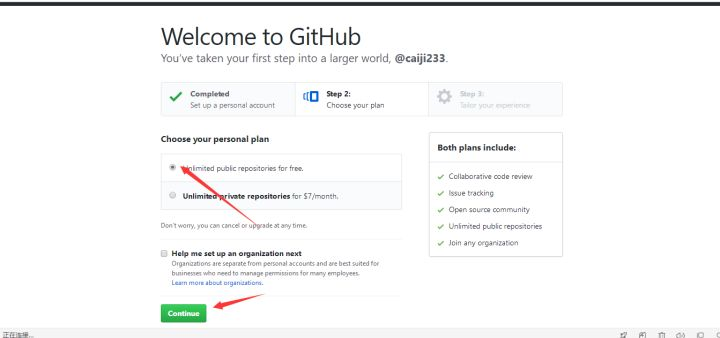
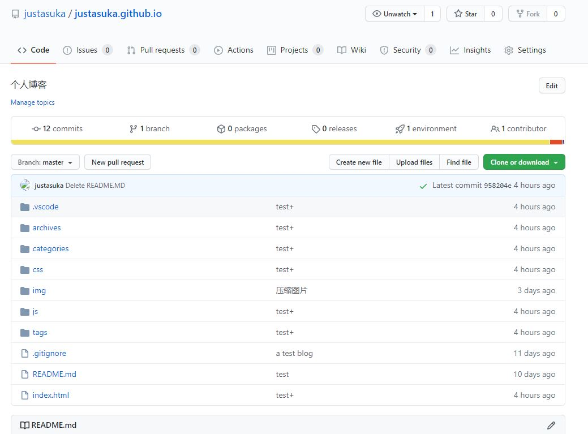
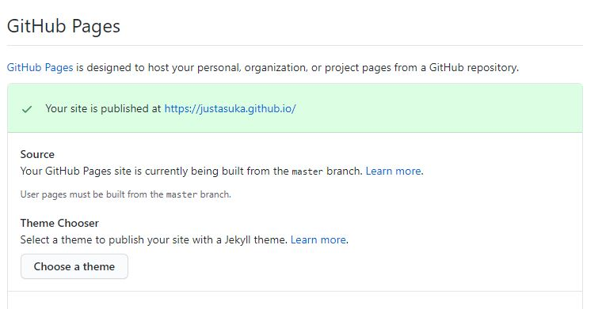
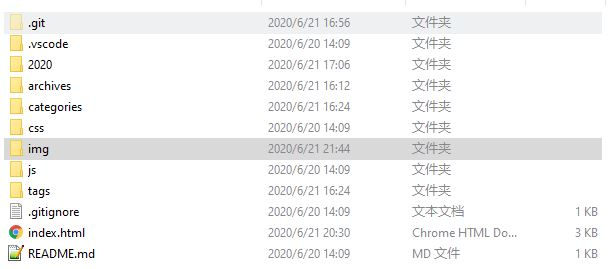

使用GitHub建立blog
2020-06-211.github
建立在GitHub上的blog，首先得注册个
GitHub账号吧，注册过程很简单，选择免费的仓库

2.搭建博客
首先，我们需要新建一个Repositories,Repositories就相当于一个库，存放我们的项目文件。
然后给自己的Repositories取一个名字，注意：名称格式最好为：你的用户名.github.io，对于一般的项目仓库名字限制一般不多， 但是我们是用来搭建blog，仓库名字就得是用户名加github.io,这也是blog的地址
然后点击create repositories.就能创建一个仓库
查看一下刚才建立的仓库

因为我已经搭建好了，所以里面会有文件，就是这个网页所展示的
进入settings，找到GitHub pages设置界面，选择source后save，这里也可以选择一个GitHub pages提供的主题，到此为止blog就算是搭建好了，在地址栏输入 你的用户名.github.io 就能访问到了

是不是很简单，但是你仓库都搭建好了，怎么能止步于此呢，继续折腾下去
3.自定义
安装一个Git，Git 是一个开源的分布式版本控制系统，使用git把项目轻松的克隆到本地，找个文件夹，右键git bash here 或者cmd
git clone https://github.com/你的用户名/你的用户名.github.io
克隆到本地后可以对项目进行修改然后push到GitHub仓库，访问到的blog也会改变

如何写一个好看的好用的blog呢？
最效率的办法是使用模板
hexo和
jekyll都能方便的搭建出静态面页，而且有很多主题可以选择，在这上面搭建会事半功倍
Hexo 是一个基于nodejs 的静态博客网站生成器
Jekyll 也是一个简单的免费的Blog生成工具，原因是jekyll只是一个生成静态网页的工具， 可以配合第三方服务，jekyll可以免费部署在Github上，而且可以绑定自己的域名。
又或者手撸一个网站，在clone到的目录下新建一个index.html，随便写个hello world
添加文件
git add index.html
提交更改
git commit -m 'test'
推送到远程仓库，推送这一步需要验证====>
nextgit push
能做的事情还有很多,由于github pages存放的都是静态文件，博客存放的不只是文章内容，还有文章列表、分类、标签、翻页等动态内容， 假如每次写完一篇文章都要手动更新博文目录和相关链接信息，相信谁都会疯掉，所以hexo或者jekyll所做的就是将这些文件都放在本地，每次写完文章 后调用写好的命令来批量完成相关页面的生成，然后再将有改动的页面提交到github。
言尽于此，一个简单的blog也完成了
ps.如何在网页中添加 Live2D 看板娘
大佬的项目将这两行代码加入你的网页中
<link rel="stylesheet" href="https://cdn.jsdelivr.net/npm/font-awesome/css/font-awesome.min.css">
<script src="https://cdn.jsdelivr.net/gh/stevenjoezhang/live2d-widget@latest/autoload.js"></script>
点击纸飞机有彩蛋